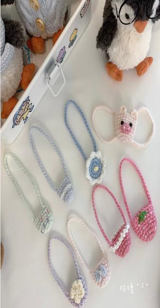

-
Doll limited series
Each suit is carefully designed to ensure a perfect fit with the image of the doll. Whether it is gorgeous holiday clothes or simple daily wear, our collection can add a unique style to your dolls.
-
Seasonal capsules series
In this magical season, we have created warm and dreamy costumes for dolls. It adopts soft plush fabric and classic winter tones, such as dark blue, silver white and warm red. Create a fairy tale atmosphere like being in the snow. Accessories such as small scarves and winter hats add lovely details.
-

Mini accessories series
You can choose additional accessories, knitted bags, hats, scarves for your dolls... The mini accessories collection encourages you to be creative and freely combine accessories according to different occasions and seasons. You can choose different accessories for the same set of clothing to easily switch between multiple styles. This flexibility not only increases the fun of dolls, but also allows each collector to show his or her unique aesthetics and style.


© Copyright © ucsiuniversity Li Shiyu 1002370579